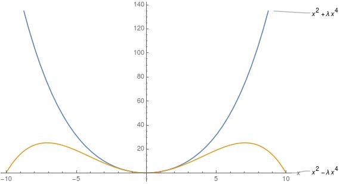

Using minimum principle in statistical mechanics
This post follow really closely Feynman notes on Statistical Mechanics. I guess this is equivalent to first order pertubation theory, but is goes as follows: Let us have a hamiltonian \(H_0\) for which we know how to calculate the partition function and therefore all of its statistical properties. Then
In the book, the example used is of an anharmonic oscillator, a harmonics oscillator with an additional \(x^3\) term. Then our \(H_0\) is the harmonics oscillator, that we know how to calculate
We can find by usual means that
and then we need to evaluate
The trick is to make a substitution \(y=x-a\)
Odd terms in y cancel out and we are left with
with \(\left< y^2\right>_0 = \frac{\hbar}{2 m \omega} \cosh \frac{\hbar \omega}{2 k T}\) and
Minimizing the right-hand side gives
Taking the positive root and expanding for \(k \ll 1\) we find
plugging back we have
Therefore the correction for the free energy comes proportional to the displacement \(a\), which has the interpretation of the position where the average force vanishes (see book).
This is very nice but we can extend this concept to \(x^4\) terms as well, then we would need to evaluate
We find that \(\left< y^4 \right>_0 = \frac{3 \hbar ^2 \coth ^2 \frac{\hbar \omega}{2 k T}}{4 m^2 \omega ^2}\) and
Minimizing the right-hand side yields three solution
we see that \(a = 0\) is a solution and the other two are given by the quadratic formula
We must interprete this result as follows, if \(\lambda \ge 0\) then \(a=0\) always. This is the case because \(x^4\) has the same parity as the original Hamiltonian. It means the following, if the original Hamiltonian is even in \(x\) and the perturbation is also even in x, then no drift from the origin must occur. This becomes clear when look at the graph the aggregated potential. On the other hand, in order to have a real value for a we must have \(\lambda<0\), this is the case because we know that there is two additional ground states when this occur. Although interesting in itself, these solutions are no use for us here, because we are interested in the statistical mechanics of oscillators, and such oscillators must have bound states. This is not the case when \(\lambda < 0\), all the states decay away to infinity.

Figure 1: Difference between the sign of \(\lambda\) on the potential
Putting this minimized a, \(\left< y^2\right>_0\) and \(\left< y^4\right>_0\) back in to the equation we have for \(\lambda \ge 0\) (\(a=0\))
To see this better we can look at the high temperature regime \(\hbar \omega \ll kT\). First we write \(x = \frac{\hbar \omega}{k T}\) and expand these expression for small \(x\). In the first case the expansion is straight forward
and the interpretation is the following, first we write this term as
And this term is nothing but a fraction of the inverse \(\alpha = \frac{m \omega}{2}\) squared
We see that, as it is expected, for high temperatures the system has a energy scale \(\alpha\) and as such the correction to the free energy \(F\) is porportional to this energy scale.